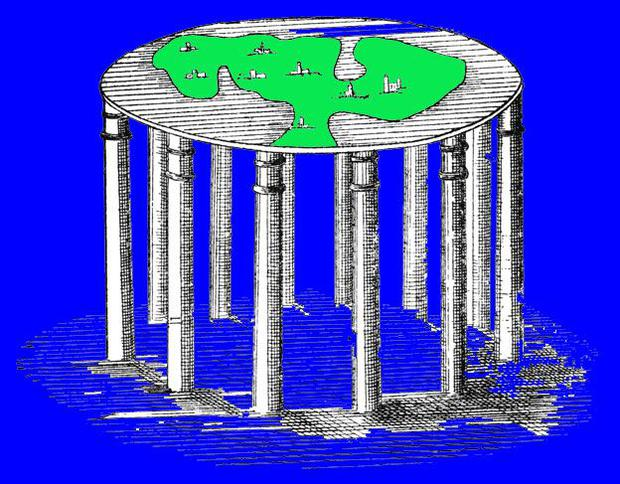
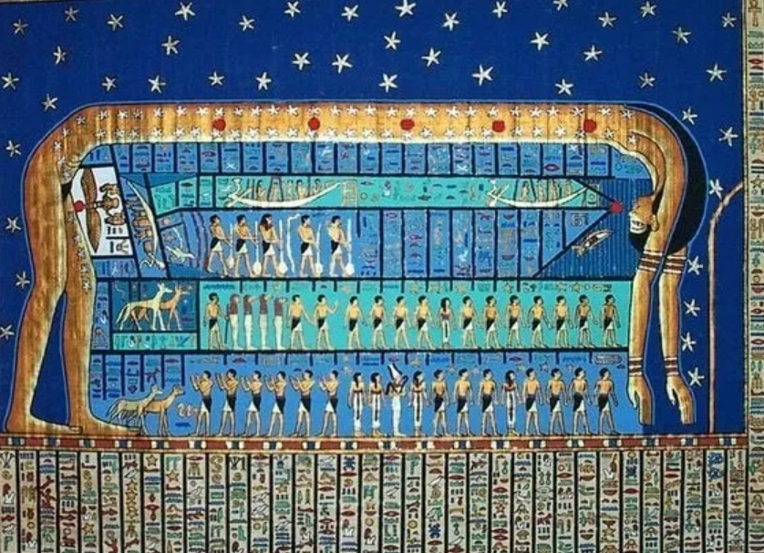
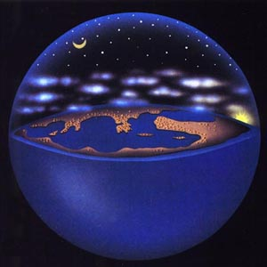
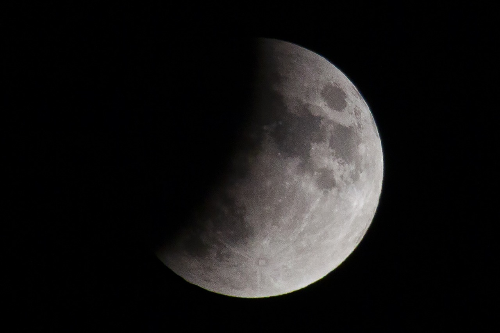
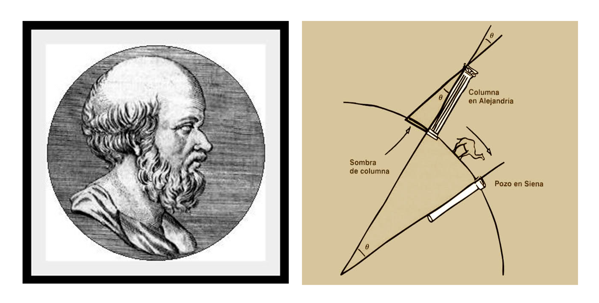
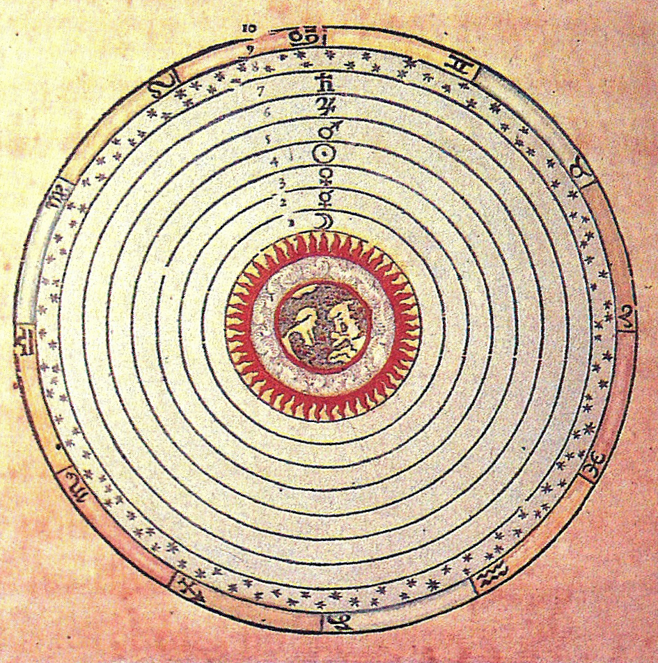
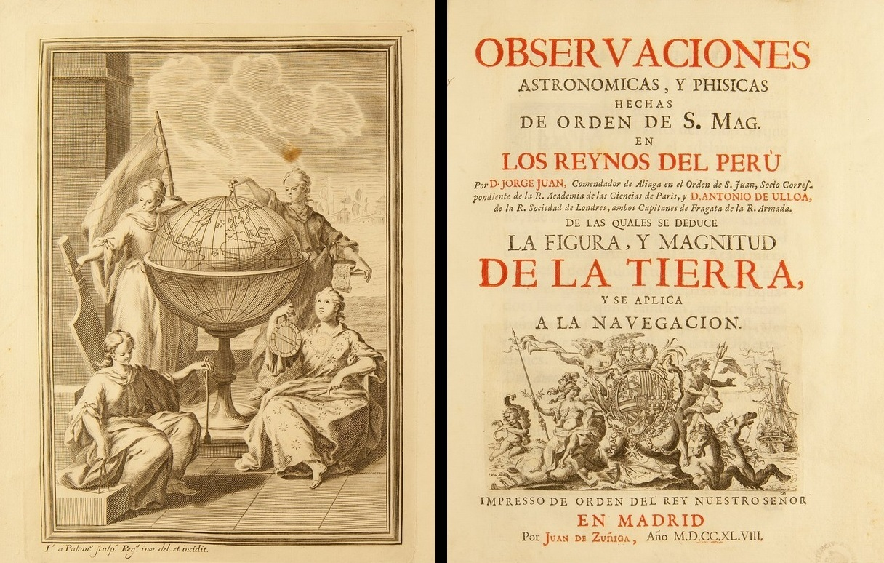
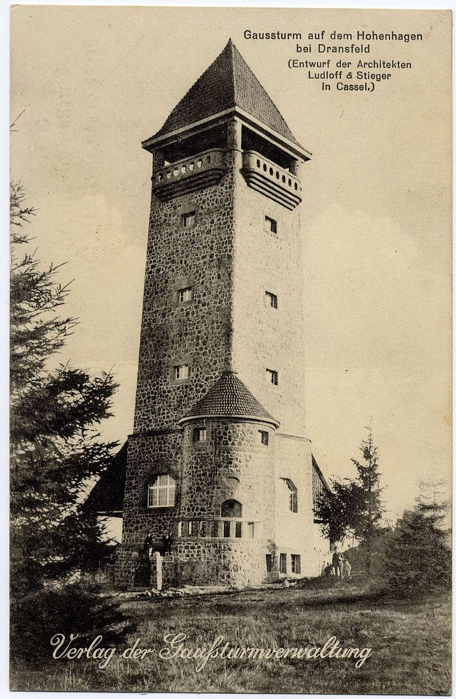
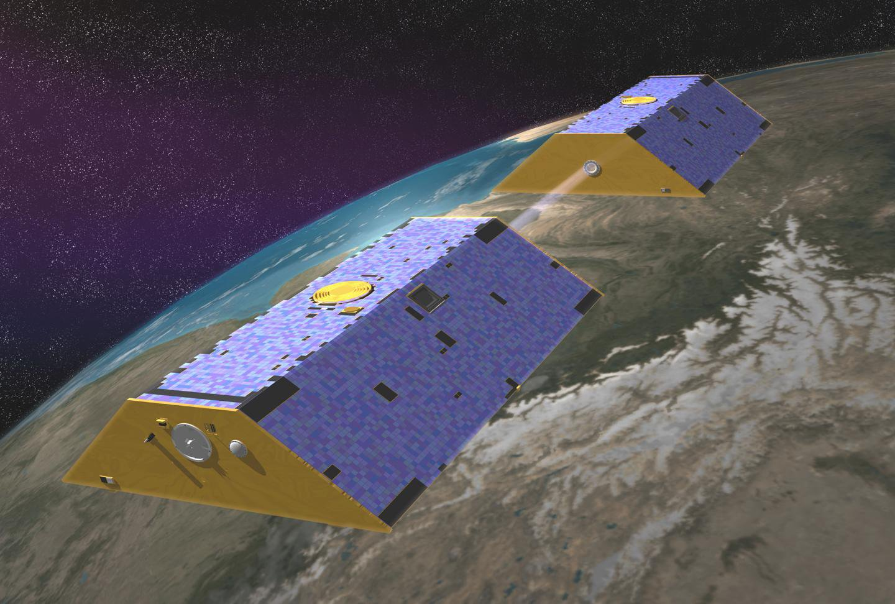

Primeras concepciones: La Tierra plana (hasta el siglo VI a.C.)
En las primeras civilizaciones humanas, la idea predominante era que la Tierra tenía una forma plana o de disco. Esto se debía a la percepción visual limitada de las personas en la antigüedad, que veían el horizonte como una línea recta y sin medios para observar grandes áreas de la Tierra.
- Babilonia
En la antigua Mesopotamia, los babilonios imaginaban la Tierra como un disco plano flotando en un vasto océano. Esta visión estaba influenciada por su percepción del horizonte plano que podían observar desde su entorno, así como por su comprensión mitológica del cosmos.
Los cielos y la Tierra estaban divididos por una bóveda, y se creía que más allá de esta bóveda estaba el reino de los dioses. La forma de la Tierra plana estaba directamente relacionada con sus creencias religiosas y la estructura social de su civilización.
- Egipto
Los egipcios también consideraban que la Tierra era plana y estaba separada del cielo por el aire (dios Shu), con el cielo sostenido por la diosa Nut, que lo arqueaba sobre la Tierra. Sus mitos incluían a los dioses como actores principales en la creación y mantenimiento de esta estructura cósmica.
- Grecia antigua
En los primeros tiempos de la Grecia antigua, los filósofos presocráticos como Anaximandro y Tales de Mileto también creían que la Tierra era plana o al menos un disco en el centro del cosmos. En su cosmología, la Tierra flotaba inmóvil y era rodeada por una esfera celeste donde se movían los astros.
La introducción de la Tierra esférica (siglo VI a.C. - siglo III a.C.)
En la Grecia clásica, especialmente entre los siglos VI y III a.C., varios pensadores propusieron que la Tierra era esférica.
- Pitágoras (siglo VI a.C.)
Pitágoras fue uno de los primeros filósofos griegos en proponer que la Tierra podría ser esférica. Aunque no dejó escritos, su escuela desarrolló la idea de la armonía y la perfección del cosmos, y la esfera era vista como la forma más perfecta. Esta idea, más filosófica que científica, contribuyó a la aceptación gradual de un modelo esférico. - Parmenides y Empédocles (siglo V a.C.)
Ambos pensadores también apoyaban la idea de una Tierra esférica, basándose en la creencia de que la simetría de la esfera mejor se ajustaba al orden cósmico. - Aristóteles (siglo IV a.C.)
Aristóteles aportó los primeros argumentos empíricos a favor de la Tierra esférica. Observó que durante los eclipses lunares, la sombra que la Tierra proyectaba sobre la Luna era siempre circular, lo que solo podría ocurrir si la Tierra tenía forma esférica.
Además, Aristóteles señaló que cuando un viajero se desplazaba hacia el sur, podía observar nuevas estrellas que no eran visibles desde el norte, lo que también implicaba una Tierra curva. - Eratóstenes (siglo III a.C.)
Eratóstenes de Cirene realizó uno de los primeros experimentos científicos conocidos para medir la circunferencia de la Tierra. Midió la sombra que el sol proyectaba en dos ciudades egipcias (Alejandría y Siena) en el solsticio de verano. Comparando la diferencia de ángulo de las sombras y la distancia entre las ciudades, calculó la circunferencia terrestre con sorprendente exactitud, lo que ofreció una confirmación sólida de la esfericidad de la Tierra.
Consolidación del modelo esférico y el modelo geocéntrico (siglo II a.C. - siglo II d.C.)
- Hiparco (190-120 a.C.) y Claudio Ptolomeo (100-170 d.C.) contribuyeron a la consolidación del modelo esférico de la Tierra.
Ptolomeo, en su famoso trabajo "Almagesto", Ptolomeo perfeccionó el modelo geocéntrico, que implicaba una Tierra esférica en el centro del universo. Aunque su teoría de que el Sol y los planetas giraban alrededor de la Tierra fue desmentida más tarde por el modelo heliocéntrico, Ptolomeo contribuyó a consolidar la idea de una Tierra esférica.
Este modelo geocéntrico sería la explicación dominante hasta el Renacimiento, aunque su concepción de la Tierra como esfera era correcta.
El paso hacia el elipsoide (siglo XVII - XVIII)
A medida que avanzaba la ciencia, los astrónomos y matemáticos comenzaron a darse cuenta de que la Tierra no era una esfera perfecta.
- Isaac Newton y la Tierra achatada en los polos
- Isaac Newton (1642-1727) fue uno de los primeros en sugerir que la Tierra no era una esfera perfecta, sino un esferoide oblato, es decir, un cuerpo ligeramente achatado en los polos y ensanchado en el ecuador. Esto se debía a la rotación de la Tierra, que provocaba una fuerza centrífuga en el ecuador.
- Experimentos geodésicos en el siglo XVIII, como las expediciones francesas a Perú y Laponia para medir la curvatura de la Tierra en diferentes latitudes, confirmaron que la Tierra efectivamente estaba achatada en los polos.
- Isaac Newton (1642-1727) fue uno de los primeros en sugerir que la Tierra no era una esfera perfecta, sino un esferoide oblato, es decir, un cuerpo ligeramente achatado en los polos y ensanchado en el ecuador. Esto se debía a la rotación de la Tierra, que provocaba una fuerza centrífuga en el ecuador.
- Pierre-Simon Laplace
En el siglo XVIII, matemáticos como Pierre-Simon Laplace ayudaron a desarrollar modelos más precisos del elipsoide, basándose en observaciones astronómicas y en el estudio del campo gravitatorio de la Tierra.
Del elipsoide al geoide (siglo XIX - XX)
- Carl Friedrich Gauss y la Geodesia
En el siglo XIX, el matemático alemán Carl Friedrich Gauss desarrolló las bases de la geodesia moderna, la ciencia que estudia la forma de la Tierra. Gauss sugirió que la forma real de la Tierra era más compleja que un simple elipsoide. Introdujo el concepto de geoide, una superficie que coincide con el nivel medio del mar y que se utiliza como referencia para la altitud. - Sistemas globales de medición
Con la llegada del siglo XX, y especialmente con el desarrollo de tecnologías satelitales y de posicionamiento global, los satélites permitieron medir con gran exactitud las variaciones en el campo gravitatorio terrestre, revelando que la Tierra tiene muchas irregularidades debido a la distribución heterogénea de su masa.
Comprensión moderna: La Tierra como un geoide (siglo XX - actualidad)
Hoy en día, sabemos que la Tierra es un geoide, una forma muy compleja que no se ajusta exactamente a un elipsoide perfecto. La forma del geoide está influenciada por la gravedad, la distribución de la masa terrestre y los océanos.
- el lanzamiento de satélites como los del programa LAGEOS y GRACE permitió medir con gran precisión las irregularidades de la forma de la Tierra y la variación del campo gravitacional.

Fuente: SCIENCE PHOTO LIBRARY

Fuente: Egiptología en Medellín

Fuente: Scriptorium

Fuente: pixabay



Lo hizo midiendo los ángulos del gran triángulo terrestre formado por los picos de los montes alemanes Hohenhagen, Inselsberg y Brocken

La misión GRACE está compuesta por dos satélites en la misma órbita. A medida que ambos giren en órbita alrededor de la Tierra, las regiones con gravedad ligeramente más fuerte afectarán al primer satélite, alejándolo levemente del segundo. así se detectan las pequeñas fluctuaciones en el campo gravitacional, midiendo la distancia entre los dos satélites con extraordinaria precisión.
Fuente: https://commons.wikimedia.org/w/index.php?curid=4849610